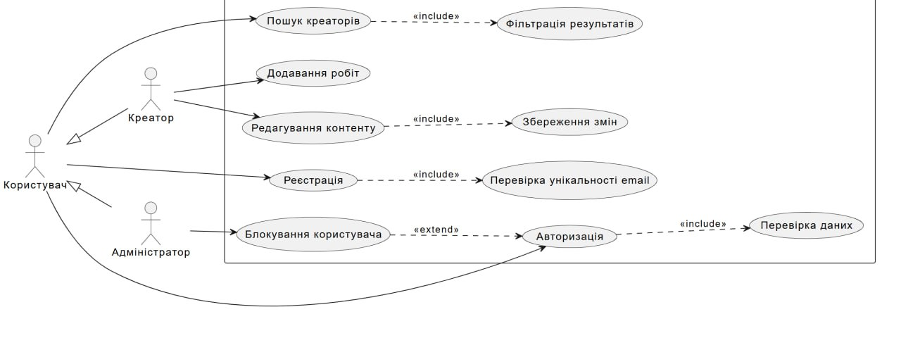

1. Діаграма прецедентів (Use Case Diagram)

Переглянути PlantUML код
@startuml
left to right direction
skinparam packageStyle rectangle
actor "Користувач" as User
actor "Креатор" as Creator
actor "Адміністратор" as Admin
' Наслідування акторів
User <|-- Creator
User <|-- Admin
rectangle "Система пошуку креаторів" {
' Основні прецеденти для Користувача
User --> (Реєстрація)
User --> (Авторизація)
User --> (Пошук креаторів)
' Прецеденти для Креатора
Creator --> (Додавання робіт)
Creator --> (Редагування контенту)
' Прецеденти для Адміна
Admin --> (Блокування користувача)
' Зв'язки Include (Включення)
(Пошук креаторів) ..> (Фільтрація результатів) : <>
(Авторизація) ..> (Перевірка даних) : <>
(Реєстрація) ..> (Перевірка унікальності email) : <>
(Редагування контенту) ..> (Збереження змін) : <>
' Зв'язок Extend (Розширення)
(Блокування користувача) ..> (Авторизація) : <>
}
@enduml